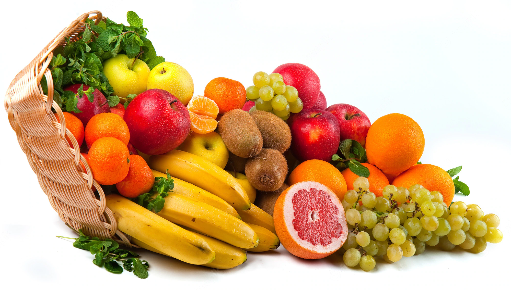

Fruta y verdura, del huerto a tu mesa.
En EasyFruity estamos revolucionando el mundo de la horticultura, actualizando ésta a través de la tecnología. Queremos realizar un cambio de mentalidad en las personas para que conseguir cambiar la manera en la que compramos y consumimos la fruta, verdura y hortalizas.